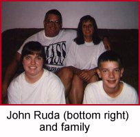
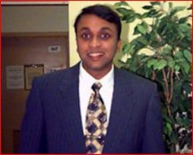
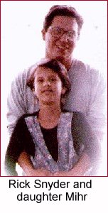

John Ruda — Dudley, MA
“I am very pleased with the friendly atmosphere President Clinton is maintaining in the debate, despite Senator Dole's interruptions and fictional information. Clinton has performed well in each debate and has given himself a well-deserved backing from the American people for his re-election”
Scott Precher — Manhattan Beach, CA“Myself, I truly feel that President Clinton is confident and strong going into this new election '96. I must take this opportunity to share a story I have regarding the President. Not long after Mr. Clinton was elected into office my wife and I were driving to the bank to get some cash from the ATM. When we arrived we heard on KCRW the President speaking and as we listened on, as we always do when it's Pres. Clinton, we found out he was right here in Santa Monica at the college. We high-tailed it up there and ran to where the people were. We found the real entrance to where the action was and went through the metal detectors and stood there on the corner waiting for the limo to approach us. Well, approach us it did. It stopped right in front of where we were and the President exited the vehicle and walked straight over towards us. I put my wife Sharon on my shoulders and she bent over, since we were two or so rows back, and shook President Clinton's hand. At the same time I must mention I made direct eye contact with him. But when a person stepped in front of him and in my view, my hand outstretched, I thought for sure I had lost my chance ... a chance of a lifetime. But to my surprise, when the person moved his eyes were still meeting mine and I was able to shake his hand with my left hand. I must say, I felt an incredible amount of integrity after that moment and also sensed a President who really cared about us ... the American people. That moment was special to me and I support the President's ticket 100% this election year. President Clinton, thanks for doing what you did for me and my wife ... I'll never forget it.”
Julie Reid — Capo Beach, CA
“I think you did a terrific job tonight and elevated the debate to a level the American People deserve! Thank you. You have my vote this year.”
Matthew Eason — Rockville, MD
“I Would like to say President Clinton did an excellent job in tonights debate. I feel he has a better plan for the future and a better understanding of what young people want in the future and understands that education is the way to make our country better for all.”
Dharm Guruswamy — Atlanta, GA
 “This second debate emphasized Bill Clinton's stature and demeanor as an advantage over Bob Dole. This debate showed that in contrast to Dole, Clinton fits well on the world stage which will be important as the next President will lead American foreign affairs into the next century.
The other point which I noticed was that Dole could not stay away from bringing up his irresponsbile tax cut proposal even at every opportunity even when the question was irrelavent. Dole still has not agreed to submit his plan to the Congressional Budget Office for a independent review and plans only to do so after he is elected.
The other problem I have with Dole are his shameless attacks on the state of the economy and American society... he gives no credit to Clinton for anything positive and blames Clinton for anything negative. He really reduced his credibility in my eyes...
Bill Clinton appeared in the debate like a confident leader ready to lead this country for another four years. Dole in contrast, did not appear very Presidential or even very affable and confident. As a moderate voter, Dole insulted my intelligence with some of his comments, which is why this debate only reinforced my choice for President: Bill Clinton.”
Pam Kirby — Russellville, KY
“Our President was magnificent! He focused on the issues relating to our future and solving problems that now face us. I have always been proud of President Clinton, but never more than tonight. Mr. Dole threw everything he had and the President rose above the attacks to address the REAL issues at hand!”
Dennis Bubla — San Antonio, TX
“President Clinton did it again. He definitely won the second debate. He has done more for our country than any president I have come to remember. We are proud to be voting for him.”
Scott Forbes — Baraboo, WI
“Dear Mr. President: Congratulations on the debate. It is wonderful to have a President who is a voice for unity AND is a statesman after all these years. For what it's worth, I'm 41 and you are the first candidate I ever voted for who won.”
Alan Hall — Birmingham, AL
“President Clinton offers a vision to restore the American dream and to bring people together.”
Suzanne Gomez — Martinez, CA
“I think that President Clinton did a very good job tonight. He tried his best to overcome the negative things that Senator Dole said and focused on the positive thing ahead for America. We cannot focus on the past but on the future. I and my family are ready to cross that bridge to the 21st century with Clinton/Gore.”
Rick Snyder — Shelburne, VT
 “The President is to be commended for keeping his focus in the debates on the issues. Bob Dole has shown himself to be desperate and clinging for some sort of foothold. President Clinton is able to clearly articulate his vision and has an unparalleled grasp on each issue that comes before him. I will be proud to cast my vote for Clinton/Gore this year.”
Mark Solomon — Ames, IA“My congratulations to President Clinton. My friends and I (all students here at Iowa State University) watched the debate in San Diego. Some of my friends are Republicans and some are Democrats. No matter what our political views are, we all admired the President for not resorting to character attacks. Senator Dole took pot shots at the President and Mr. Clinton stayed focused on the issues. To stay on the issues and ignore the attacks showed an enormous amount of character! Mr. Clinton seemed to be on the same level as the people that he was talking to. It is important to me to have a President that understands how "regular" people live. The President is a man of character and commitment. As a new citizen of the United States, it will be a pleasure to cast my FIRST ever vote for Clinton/Gore !!!”

Paid for by Clinton/Gore ’96 General Committee, Inc.